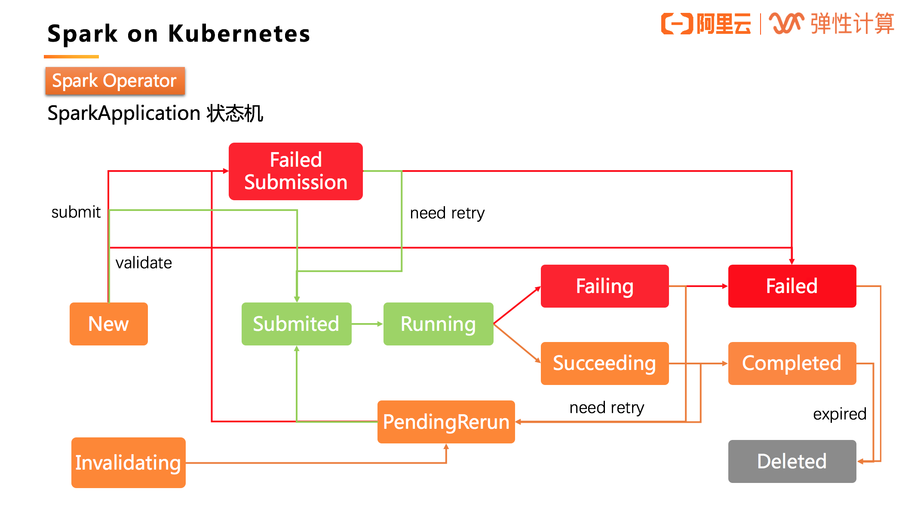

- 01 架构的演进.md.html
- 02 Serverless 的价值.md.html
- 03 常见 Serverless 架构模式.md.html
- 04 Serverless 技术选型.md.html
- 05 函数计算简介.md.html
- 06 函数计算是如何工作的？.md.html
- 07 函数粘合云服务提供端到端解决方案.md.html
- 08 函数计算的开发与配置.md.html
- 09 函数的调试与部署.md.html
- 10 自动化 CI&CD 与灰度发布.md.html
- 11 函数计算的可观测性.md.html
- 12 典型案例 1：函数计算在音视频场景实践.md.html
- 13 典型案例 3：十分钟搭建弹性可扩展的 Web API.md.html
- 14 Serverless Kubernetes 容器服务介绍.md.html
- 15 Serverless Kubernetes 应用部署及扩缩容.md.html
- 16 使用 Spot 低成本运行 Job 任务.md.html
- 17 低成本运行 Spark 数据计算.md.html
- 18 GPU 机器学习开箱即用.md.html
- 19 基于 Knative 低成本部署在线应用，灵活自动伸缩.md.html
- 20 快速构建 JenkinsGitlab 持续集成环境.md.html
- 21 在线应用的 Serverless 实践.md.html
- 22 通过 IDEMaven 部署 Serverless 应用实践.md.html
- 23 企业级 CICD 工具部署 Serverless 应用的落地实践.md.html
- 24 Serverless 应用如何管理日志&持久化数据.md.html
- 25 Serverless 应用引擎产品的流量负载均衡和路由策略配置实践.md.html
- 26 Spring CloudDubbo 应用无缝迁移到 Serverless 架构.md.html
- 27 SAE 应用分批发布与无损下线的最佳实践.md.html
- 28 如何通过压测工具+ SAE 弹性能力轻松应对大促.md.html
- 29 SAE 极致应用部署效率.md.html
- 捐赠
17 低成本运行 Spark 数据计算
产品介绍
阿里云弹性容器实例 ECI
ECI 提供安全的 Serverless 容器运行服务。无需管理底层服务器，只需要提供打包好的 Docker 镜像，即可运行容器，并仅为容器实际运行消耗的资源付费。

阿里云容器服务产品族

不论是托管版的 Kubernetes（ACK）还是 Serverless 版 Kubernetes（ASK），都可以使用 ECI 作为容器资源层，其背后的实现就是借助虚拟节点技术，通过一个叫做 Virtual Node 的虚拟节点对接 ECI。

Kubernetes + ECI
有了 Virtual Kubelet，标准的 Kubernetes 集群就可以将 ECS 和虚拟节点混部，将 Virtual Node 作为应对突发流量的弹性资源池。
ASK（Serverless Kubernetes）+ ECI
Serverless 集群中没有任何 ECS worker 节点，也无需预留、规划资源，只有一个 Virtual Node，所有的 Pod 的创建都是在 Virtual Node 上，即基于 ECI 实例。

Serverless Kubernetes 是以容器和 Kubernetes 为基础的 Serverless 服务，它提供了一种简单易用、极致弹性、最优成本和按需付费的 Kubernetes 容器服务，其中无需节点管理和运维，无需容量规划，让用户更关注应用而非基础设施的管理。
Spark on Kubernetes
Spark 自 2.3.0 开始试验性支持 Standalone、on YARN 以及 on Mesos 之外的新的部署方式：Running Spark on Kubernetes，如今支持已经非常成熟。
Kubernetes 的优势

Spark on kubernetes 相比于 on Yarn 等传统部署方式的优势：
- 统一的资源管理。不论是什么类型的作业都可以在一个统一的 Kubernetes 集群中运行，不再需要单独为大数据作业维护一个独立的 YARN 集群。
- 传统的将计算和存储混合部署，常常会为了扩存储而带来额外的计算扩容，这其实就是一种浪费；同理，只为了提升计算能力，也会带来一段时期的存储浪费。Kubernetes 直接跳出了存储限制，将离线计算的计算和存储分离，可以更好地应对单方面的不足。
- 弹性的集群基础设施。
- 轻松实现复杂的分布式应用的资源隔离和限制，从 YRAN 复杂的队列管理和队列分配中解脱。
- 容器化的优势。每个应用都可以通过 Docker 镜像打包自己的依赖，运行在独立的环境，甚至包括 Spark 的版本，所有的应用之间都是完全隔离的。
- 大数据上云。目前大数据应用上云常见的方式有两种：1）用 ECS 自建 YARN（不限于 YARN）集群；2）购买 EMR 服务，目前所有云厂商都有这类 PaaS，如今多了一个选择——Kubernetes。
Spark 调度

图中橙色部分是原生的 Spark 应用调度流程，而 Spark on Kubernetes 对此做了一定的扩展（黄色部分），实现了一个 KubernetesClusterManager。其中 **KubernetesClusterSchedulerBackend 扩展了原生的CoarseGrainedSchedulerBackend，**新增了 **ExecutorPodsLifecycleManager、ExecutorPodsAllocator 和 KubernetesClient **等组件，实现了将标准的 Spark Driver 进程转换成 Kubernetes 的 Pod 进行管理。
Spark submit
在 Spark Operator 出现之前，在 Kubernetes 集群提交 Spark 作业只能通过 Spark submit 的方式。创建好 Kubernetes 集群，在本地即可提交作业。

作业启动的基本流程：
- Spark 先在 K8s 集群中创建 Spark Driver（pod）。
- Driver 起来后，调用 K8s API 创建 Executors（pods），Executors 才是执行作业的载体。
- 作业计算结束，Executor Pods 会被自动回收，Driver Pod 处于 Completed 状态（终态）。可以供用户查看日志等。
- Driver Pod 只能被用户手动清理，或者被 K8s GC 回收。
直接通过这种 Spark submit 的方式，参数非常不好维护，而且不够直观，尤其是当自定义参数增加的时候；此外，没有 Spark Application 的概念了，都是零散的 Kubernetes Pod 和 Service 这些基本的单元，当应用增多时，维护成本提高，缺少统一管理的机制。
Spark Operator
Spark Operator 就是为了解决在 Kubernetes 集群部署并维护 Spark 应用而开发的，Spark Operator 是经典的 CRD + Controller，即 Kubernetes Operator 的实现。

下图为 SparkApplication 状态机：

Serverless Kubernetes + ECI
那么，如果在 Serverless Kubernetes 集群中运行 Spark，其实际上是对原生 Spark 的进一步精简。

存储选择

对于批量处理的数据源，由于集群不是基于 HDFS 的，所以数据源会有不同，需要计算与存储分离，Kubernetes 集群只负责提供计算资源。
- 数据源的存储可以采用阿里云对象存储 OSS、阿里云分布式存储 HDFS 等。
- 计算的临时数据、Shuffle 数据可以采用 ECI 提供的免费的 40GB 的系统盘存储空间，还可以自定义挂载阿里云数据盘、以及 CPFS/NAS 文件系统等，都拥有非常不错的性能。
© 2019 - 2023 Liangliang Lee. Powered by gin and hexo-theme-book.